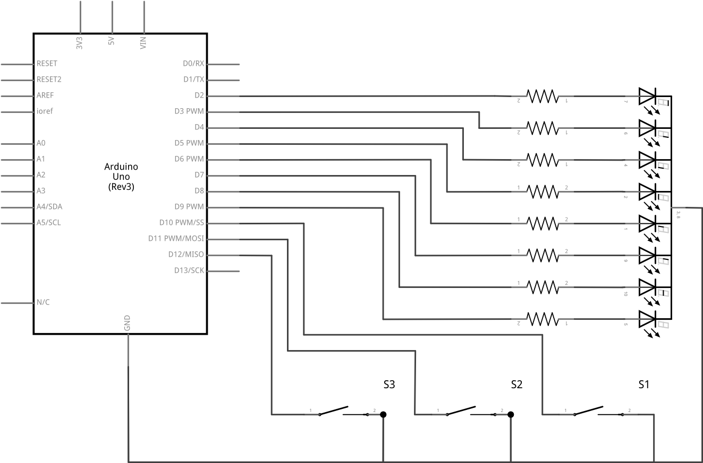
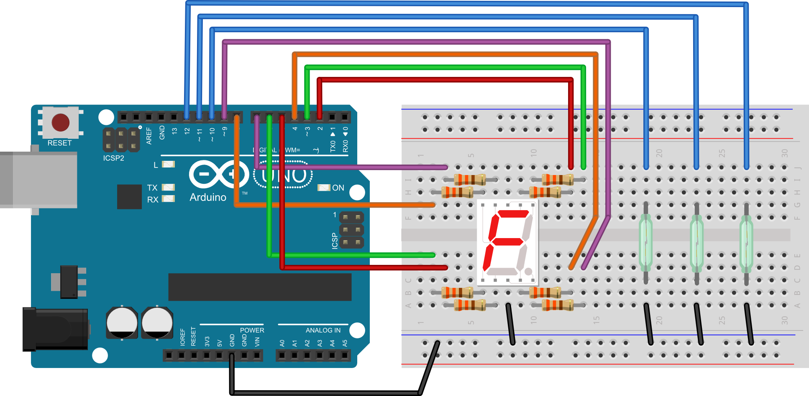

Poglavlje 5
Zadatak 24
Na mikrokontroler spojite sedam segmentni ekran i tri reed sklopke. Napišite program koji će očitavati na kojem se katu nalazi dizalo. Kada je zatvorena sklopka 1 dizalo se nalazi na prizemlju i na sedam segmentnom pokazivaču se ispisuje "P", kada je sklopka 2 zatvorena dizalo se nalazi na prvom katu i na sedam segmentnom pokazivaču se ispisuje broj jedan, a kada je sklopka 3 zatvorena dizalo se nalazi na drugom katu i na sedam segmentnom pokazivaču se ispisuje broj dva.
SHEMA:

EKSPERIMENTALNA PLOČICA:

RJEŠENJE:
int segA = 2; //definiraj segA = 2 int segB = 3; //definiraj segB = 3 int segC = 4; //definiraj segC = 4 int segD = 5; //definiraj segD = 5 int segE = 6; //definiraj segE = 6 int segF = 7; //definiraj segF = 7 int segG = 8; //definiraj segG = 8 int reed1 = 10; //definiraj reed1 = 9 int reed2 = 11; //definiraj reed2 = 10 int reed3 = 12; //definiraj reed3 = 11 void iskljucisvesegmente(){ digitalWrite(segA, LOW); //isključi a segment-početno stanje digitalWrite(segB, LOW); //isključi b segment-početno stanje digitalWrite(segC, LOW); //isključi c segment-početno stanje digitalWrite(segD, LOW); //isključi d segment-početno stanje digitalWrite(segE, LOW); //isključi e segment-početno stanje digitalWrite(segF, LOW); //isključi f segment-početno stanje digitalWrite(segG, LOW); //isključi g segment-početno stanje } void setup() { pinMode(segA, OUTPUT); //postavi izvod seg_a kao izlazni pinMode(segB, OUTPUT); //postavi izvod seg_b kao izlazni pinMode(segC, OUTPUT); //postavi izvod seg_c kao izlazni pinMode(segD, OUTPUT); //postavi izvod seg_d kao izlazni pinMode(segE, OUTPUT); //postavi izvod seg_e kao izlazni pinMode(segF, OUTPUT); //postavi izvod seg_f kao izlazni pinMode(segG, OUTPUT); //postavi izvod seg_g kao izlazni pinMode(reed1, INPUT_PULLUP); //postavi izvod reed1 kao ulazni pinMode(reed2, INPUT_PULLUP); //postavi izvod reed2 kao ulazni pinMode(reed3, INPUT_PULLUP); //postavi izvod reed3 kao ulazni digitalWrite(segA, LOW); //isključi a segment-početno stanje digitalWrite(segB, LOW); //isključi b segment-početno stanje digitalWrite(segC, LOW); //isključi c segment-početno stanje digitalWrite(segD, LOW); //isključi d segment-početno stanje digitalWrite(segE, LOW); //isključi e segment-početno stanje digitalWrite(segF, LOW); //isključi f segment-početno stanje digitalWrite(segG, LOW); //isključi g segment-početno stanje } void loop() { if (digitalRead(reed1)==LOW){ //ukoliko je dizalo na prizemlju iskljucisvesegmente(); digitalWrite(segA,HIGH); //prikaz slova P digitalWrite(segB,HIGH); //prikaz slova P digitalWrite(segE,HIGH); //prikaz slova P digitalWrite(segF,HIGH); //prikaz slova P digitalWrite(segG,HIGH); //prikaz slova P } else if (digitalRead(reed2)==LOW){ //ukoliko je dizalo na prvom katu iskljucisvesegmente(); digitalWrite(segB,HIGH); //prikaz broja 1 digitalWrite(segC,HIGH); //prikaz broja 1 } else if (digitalRead(reed3)==LOW){ //ukoliko je dizalo na drugom katu iskljucisvesegmente(); digitalWrite(segA,HIGH); //prikaz broja 2 digitalWrite(segB,HIGH); //prikaz broja 2 digitalWrite(segE,HIGH); //prikaz broja 2 digitalWrite(segD,HIGH); //prikaz broja 2 digitalWrite(segG,HIGH); //prikaz broja 2 } }